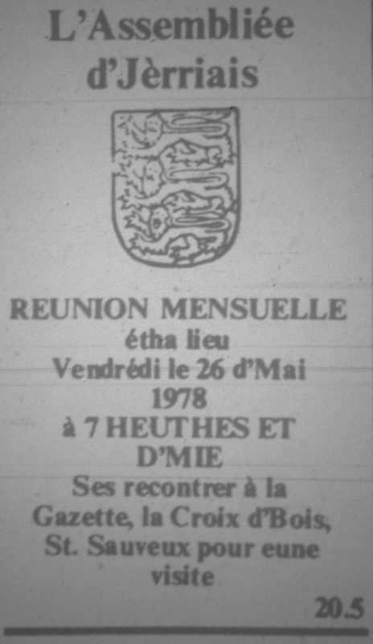

Vendredi, lé 28 dé mai, passant huiptante membres lus rêunîtent à la Gâzette, La Crouaix d'Bouais, pour faithe eune visite. Lé Sieur Frank Walker, directeu, fit la beinv'nue ès membres, et li et les Mêssieux M. Rumfitt, P. Tabb et R. Satchell explyitchitent tout divèrsément bein.
Vendredi, lé 28 dé mai, passant huiptante membres lus rêunîtent à la Gâzette, La Crouaix d'Bouais, pour faithe eune visite. Lé Sieur Frank Walker, directeu, fit la beinv'nue ès membres, et li et les Mêssieux M. Rumfitt, P. Tabb et R. Satchell explyitchitent tout divèrsément bein.
Y'avait pas ieu hardi d'changements au bâtisse mais l'fond d'l'aithe est trais pids en d'ssus du vyi. Châque f'nêtre a couôté dans les sept chents louis. Y'a dans les chent personnes à travailli dans la grand' office par jour et les membres vîtent coumment qu'la gâzette est arrangie touos les jours et pour deux jours l'avant. I' vîtent étout les difféthentes machinnes et procéduthes et coumment qu'la gâzette arrive siez-sé. Lé papi couôte quatre chents louis l'tonné mais 'tait qué nénante-huit louis l'tonné y'a chînq ans. Quatre tonnieaux d'papi sont fait servi touos les sièrs et i' faut à bein près eune heuthe à înmprînmer la gâzette.

Auprès eune tâssée d'thée et les galettes, lé Président fit les r'mèrciêments et l'Sieur Walker dit qu'il avait 'té bein content dé vaie l'intéthêt mouontré par les membres.
Mde. de la Haye annoncit qué vendrédi, lé 28 dé juillet, y'éthait eune visite au Musée lé matîn à 10 heuthes, un pique-nique sus l'Gardîn d'Olivet, et l'sé un dînner au ''Priory'', Lé Creux au Dgiâblye, Ste. Mathie, à 7 heuthes et d'mie. Les billets, £3.25, s'sont à vendre mêcrédi le 19 juillet, à L'Ebenhézer.
Visite en Dgèrnésy, jeudi lé 14 dé septembre – détails pus tard.
Viyiz étout: